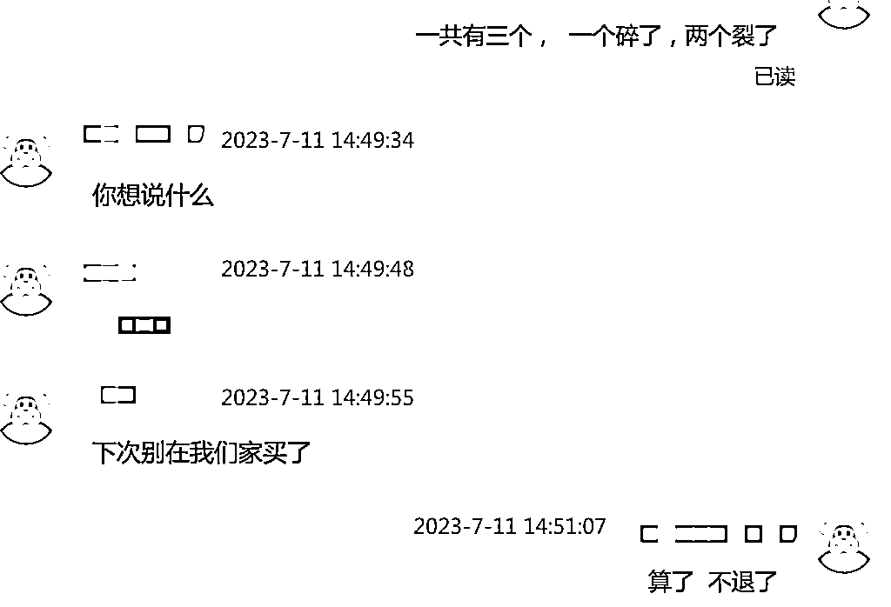

来源：https://ivvygw9y2ti.feishu.cn/docx/I43JdLvW4ocpg8xSYfnce0Vknrh
各位圈友大家好，我是七喜，年初被离职后回到老家（一个三线城市）创业，尝试过N多个项目，交过学费，当过韭菜。在所有项目都没有拿到好的正反馈后也怀疑过自己，不知道未来会怎么样，也不知道下一步要怎么走。直到5月初了解到TEMU，做到目前为止单日利润平均3500左右，月利润10W+。
TEMU的入驻门槛极低，个人身份有银行卡就可以入驻。
它是一个全托管的平台，只需要做好后端供货即可，运营，国际物流等等全部由平台来负责，不需要有电商的运营经验。
处于流量红利期，已经陆续开通了将近50个国家的站点，真正的一个商品链接直达全球买家。
注册 -> 上品 -> 测品 -> 备货 -> 爆单
1：注册，这一步不多说明了，附上注册链接，按要求填写提交即可 https://kuajing.pinduoduo.com/login/register
2：上品
注册当天审核通过之后，就可以开始上品了
上图是一个商品的生命周期，全托管平台会有一个商品审核（买手选中即为审核通过），价格核算（核价师给一个建议售价），申请备货（发首单到仓库测品）等流程。
3：测品， 当你的商品跟平台议价通过后，即可申请备首单货到平台仓库，一开始发5件货也可以，后来强制要求最低15或20件货， 成本的话， 货值低的品大概在200元以内即可完成测品，以下为平台提供的测品是否成功的判断条件
★★★SKC日均销量大于10即为【爆款】★★★
★★★SKC日均销量大于5即为【旺款】★★★
★★★SKC近7日总销量大于7即为【上新成功】★★★
4：备货
备货分为首单和返单， 返单又分为普通备货单和紧急备货单
普通备货单可以卖家主动下单也可以平台自动下返单，销量越好的品平台分配的备货额度就越多。
5：爆单
在测试了100多个品之后，有十多个品开始销量慢慢上升，最后成为日销量几百单的爆品，每天不停的打包成了痛并快乐着的事情。
供应商，资质，侵权等等
1：供应商， 我是从1688拿货的，经常遇到商家发来的货跟下单的货对应不上，这种也只能退掉， 后来都是在下单前跟商家反复确认。
2：资质： 带电产品及儿童使用产品（低于14岁）需要提供资质认证，例如FCC，CE等，平台初期是你可以先卖，卖到1000件之后才会跟你要认证，现在强制要求认证，否则不给入仓。
3：侵权：Frisbee（飞盘），这个关键词坑了一大波商家， 这个词被注册了专利， 好多商家在上架飞盘产品时在标题里填写了这个词，后来被起诉收到了TRO，花了一大笔钱进行和解。
4：商品条码标签贴到了封口上，质检不合格不给入库，直接被退回。
5：封口长度超过12.5cm，没有贴防窒息标签，被退回。
6：没有正确填写特殊属性，例如粉末，液体，磁性等， 到仓入库后迟迟不给上架，拖了半个月才知道原因。
7：选择的品容易出现瑕疵被退回， 例如木制品出现毛刺，通过热熔胶固定的有溢胶等等。
8：被物流贴错面单，A包裹贴了B的面单，B包裹贴了A的面单， 直接导致损失物流费，且备货额度被占用，最严重的可能会导致连接被废掉！
等等。。。
从1688商家拿货，批发跟零售是不同的，批发的商家对于质量的把控远不如零售，拿到货出问题了去找商家，结果商家让我下次别在他家买了。

有一个品，一开始中文的没问题，后来说有价格不行让用标签盖住，现在又说盖住也不行了要给退回， 这是个爆品，最后还是花钱定制了英文包装。
1：80%的订单一定来自于20%的爆款，出单大头一定是少数的sku，所以一定要往死里薅爆款的红利。
举个例子，前台有一个老爆款——洗碗刷，假如你卖的很好，千万不要急着做其他的新品，先把洗碗刷的所有颜色都做一遍，然后四个装，六个装，八个装...... 所有的搭配组合做一遍，然后家居类目卖爆了，再上架到工具类目卖爆，上架到工业类目卖爆，所有能上的类目全部上一遍！通过这样布局爆款，一天就能有个几千单。
2：当你发现一个类目或者一条产品线整体的审核速度很慢，或者是核价通过率很低，那就迅速放弃，换产品线，甚至更换类目！ 因为这个平台买手能起到的决定性因素太强了，效率决定一切！ 千万不要一直卡在某一步。
3：人均产值很重要，不要冒然的扩展团队， 能用临时工的就不要找全职！把打包等工作全部交给临时工。
4：先做泛类目，再做垂直店铺。千万不要一开始就做垂直店铺，都是需要经过不断的选品测品的试错过程，才能筛选到爆款，从而确定适合自己的类目。泛类目是很容易起量的，有了单量之后再去垂直类目深耕，建立自己的供应链优势。
5：不要通过降低自己的利润去换单量。
TEMU从去年9月份到现在上线1年多的时间，平台规则也在逐步完善，个人认为红利期还没有结束，想要入局去做的可以立马去做。适合没有电商经验的人来小成本尝试。
首次分享，文笔不好，写出来的不足想要表达的十分之一，大家勿喷。
一起生财有术！